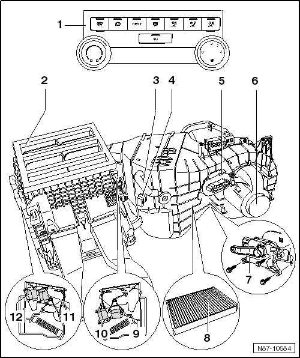

Manual A/C System
Manual A/C System
Before beginning assembly work on electrical system, perform the following items:
• Switch off all electrical consumers.
• Switch off ignition.
• Remove ignition key.

1 Manual A/C components with A/C Control Module (J301)
• Removing and installing, refer to --> [ Manual A/C System and Climatronic Control Module ] Removal and Replacement
2 Upper part of air distribution housing
3 Glove compartment cooling hose
4 Evaporator Vent Temperature Sensor (G263)
• Removing and installing, refer to --> [ Evaporator Vent ] Evaporator Vent
5 Fresh Air Blower Series Resistor With Fuse (N24)
6 Front Blower Regulation Motor (Bitron) (V305)
• Removing and installing, refer to --> [ Front Blower Regulation Motor ] Front Blower Regulation Motor
7 Fresh/Recirculating Air Door Motor (V154)
• Removing and installing, refer to --> [ Left Center Vent 4 Zone and Center Vent Adjustment, 2 Zone Climatronic ] Service and Repair
8 Dust and pollen filter
• Removing and installing, refer to --> [ Dust and Pollen Filter with Activated Charcoal Filter Insert ] Service and Repair
9 Temperature Regulator Door Motor (V68)
• With Temperature Regulator Door Motor Position Sensor (G92)
• For motor allocation, refer to --> [ A/C Unit Motor Locations, Manual A/C ] A/C Unit Motor Locations, Manual A/C
• Removing and installing, refer to --> [ Footwell and Temperature Regulator Door, Manual A/C System ] Service and Repair
10 Footwell Door Motor (V261)
• With the Footwell Door Motor Position Sensor (G468)
• For motor allocation, refer to --> [ A/C Unit Motor Locations, Manual A/C ] A/C Unit Motor Locations, Manual A/C
• Removing and installing, refer to --> [ Footwell and Temperature Regulator Door, Manual A/C System ] Service and Repair
11 Front Air Distribution Motor (V145)
• With the Front Air Distribution Motor Position Sensor (G470)
• For motor allocation, refer to --> [ A/C Unit Motor Locations, Manual A/C ] A/C Unit Motor Locations, Manual A/C
• Removing and installing, refer to --> [ Defroster Door and Front Air Distribution, Manual A/C System ] Service and Repair
12 Defroster Door Motor (V107)
• With the Defroster Door Motor Position Sensor (G135)
• For motor allocation, refer to --> [ A/C Unit Motor Locations, Manual A/C ] A/C Unit Motor Locations, Manual A/C
• Removing and installing, refer to --> [ Defroster Door and Front Air Distribution, Manual A/C System ] Service and Repair